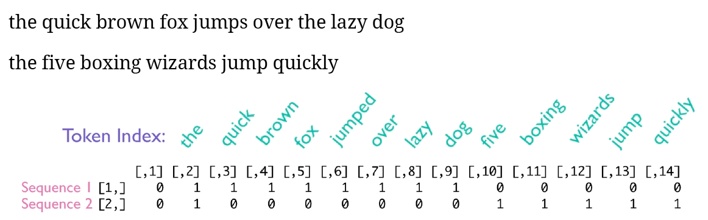

8 Deep Learning for Text and Sequences
The following chapters follow the structure of the book.
Introduction
This method is able to cover:
Text, understood as a sequence of words
Timeseries
Sequence data in general
To deal with this, we are going to work with recurrent neural networks and 1D convoluted networks.
8.1 Working with Text Data
Notice that NN only works with numbers, hence we cannot use text as input. Hence we must create tensors that are text vectorized. To do this, we have several methods:
- Segment text into words and transforming each word into a vector.
- Segment text into characters and transform each character into a vector.
- Extract n-grams of words or characters, and transform each n-gram ino a vector. N-Grams are overlapping groups of multiple consecutive words or characters.
N-Grams
We see that the sentence, “The cat sat on the mat.” may be composed in 2-grams.
{“The,” “The cat,” “cat,” “cat sat,” “sat,”“sat on,” “on,” “on the,” “the,” “the mat,” “mat”}, or 3-grams
{“The,” “The cat,” “cat,” “cat sat,” “The cat sat,”“sat,” “sat on,” “on,” “cat sat on,” “on the,” “the,”“sat on the,” “the mat,” “mat,” “on the mat”}.
This is also cllaed bag-of-2-grams or equvilently bag-of-3-grams
8.1.1 One-hot encoding of words and characters
A visual example:

We see that the matrix will be sparse as we have a lot of 0’s in there. Also it is hard coded, henced fixted dictionaries.
This is the most common and basic way of tokenizing.
# Listing 6.1. Word-level one-hot encoding (toy example)
samples <- c("The cat sat on the mat.", "The dog ate my homework.")
token_index <- list() #Creating an index
for (sample in samples){
for (word in strsplit(sample, " ")[[1]]){ #Tokenizing
if (!word %in% names(token_index)) #If not in the index
token_index[[word]] <- length(token_index) + 2 #Ins
}
}
max_length <- 10
#Saving the results in a 3D tensor
results <- array(0, dim = c(length(samples),
max_length,
max(as.integer(token_index))))
for (i in 1:length(samples)) {
sample <- samples[[i]]
words <- head(strsplit(sample, " ")[[1]], n = max_length)
for (j in 1:length(words)) {
index <- token_index[[words[[j]]]]
results[[i, j, index]] <- 1
}
}Now we can also see an example on character level.
# Listing 6.2. Character-level one-hot encoding (toy example)
samples <- c("The cat sat on the mat.", "The dog ate my homework.")
ascii_tokens <- c("", sapply(as.raw(c(32:126)), rawToChar))
token_index <- c(1:(length(ascii_tokens))) #Loading ascii tokens, predefined list
names(token_index) <- ascii_tokens
max_length <- 50
results <- array(0, dim = c(length(samples), max_length, length(token_index)))
for (i in 1:length(samples)) {
sample <- samples[[i]]
characters <- strsplit(sample, "")[[1]]
for (j in 1:length(characters)) {
character <- characters[[j]]
results[i, j, token_index[[character]]] <- 1 #Inserting to dim i, j and
}
}Naturally we see that the dimensions of the tensor is greatly increased.
#Listing 6.3. Using Keras for word-level one-hot encoding
library(keras)
samples <- c("The cat sat on the mat.", "The dog ate my homework.")
tokenizer <- text_tokenizer(num_words = 1000) %>%
fit_text_tokenizer(samples)
sequences <- texts_to_sequences(tokenizer, samples)
one_hot_results <- texts_to_matrix(tokenizer, samples, mode = "binary")
word_index <- tokenizer$word_index
cat("Found", length(word_index), "unique tokens.\n")We can also apply something called hashing trick, notice that the hashFunction cannot be isntalled. This is specifically useful if the vocabulary is very large.
In the following example we will be hashing words in 1000 characters long vectors. Notice that the more words you have, the longer must the vectors be.
#Listing 6.4. Word-level one-hot encoding with hashing trick (toy example)
# library(hashFunction)
# samples <- c("The cat sat on the mat.", "The dog ate my homework.")
# dimensionality <- 1000 1
# max_length <- 10
# results <- array(0, dim = c(length(samples), max_length, dimensionality))
# for (i in 1:length(samples)) {
# sample <- samples[[i]]
# words <- head(strsplit(sample, " ")[[1]], n = max_length)
# for (j in 1:length(words)) {
# index <- abs(spooky.32(words[[i]])) %% dimensionality 2
# results[[i, j, index]] <- 1
# }
# }8.1.2 Using word embeddings
One sees that one hot encoding leads to very big and sparse matrices, we can overcome this with word embeddings, which is the essence of the following.
To do this, there are two approaches:
- You start with some random word vectors and then learn the word vectors following the same principle as learning neural network weights.
- Load precomputed word embeddings, just like loading a pretrained conv. So called pretrained word embeddings.
The goal of the word embeddings is that one will map out similarity/connectedness of words. Meaning that we want to reflect the actual language. One must be aware that the advanced language nuances for what it is concerning, meaning that movie reviews and scientific papers may have different word embeddings.
It is hypothesized, that there is a true word embeddings map, although that is yet to me discovered. For example one can arrance wolf, tiger, dog and cat on two vectors, 1) wild to pet animal, and 2) canine to feline.
Figure 8.1: Figure 6.3. A toy example of a wordembedding space
Naturally, this could be on many different scales. Thus, we see that we have vectorized the words and geometrically we can see if they are pointing in the same direction or if they are going away from each other, hence we can calculate the distance between the words, to measure how similar words are.
Compared to one-hot encoding, we see the following:
Figure 8.2: One-hot encoding vs. word embedding
We see that the left = the one-hot encoded and the right = words embedding.
8.1.2.1 The first approach
Here we can use the power of backpropaganation.
Here is an example with IMDB reviews, with sentiment prediction.
#Listing 6.6. Loading the IMDB data for use with an embedding layer
max_features <- 10000 #Number of words for consideration
maxlen <- 20 #Cutting the text after 20 words
imdb <- dataset_imdb(num_words = max_features)
c(c(x_train, y_train), c(x_test, y_test)) %<-% imdb
#Creating 2D integer tensors, shape = (samples,maxlen)
x_train <- pad_sequences(x_train, maxlen = maxlen) #Adding 0, if the review is <20 words
x_test <- pad_sequences(x_test, maxlen = maxlen)We see that the max length and max features are parameters where we need to control how much information to include, while having a competitive model and equally a model that is runable.
Now we can create a model with the word embedding.
#Listing 6.7. Using an embedding layer and classifier on the IMDB data
dim_embeddings <- 8 #The amount of dimensions the words is to be measured on.
epochs <- 10
batch_size <- 32
val_split <- 0.2
model <- keras_model_sequential() %>%
layer_embedding(input_dim = max_features
,output_dim = dim_embeddings
,input_length = maxlen) %>%
layer_flatten() %>%
layer_dense(units = 1, activation = "sigmoid")Note to the mode, We see that the embedding layer can be compared with the feature maps from the convnn, where we have a 3D tensor, which is going to be flattened.
model %>% compile(
optimizer = "rmsprop",
loss = "binary_crossentropy",
metrics = c("acc") #We have balanced data, so acc. should do
)
summary(model)
history <- model %>% fit(
x_train, y_train,
epochs = epochs,
batch_size = batch_size,
validation_split = val_split
)We see that there is an indication of overfitting. Although the validation accuracy tend towards 75%. And notice that we are only using 20 words from each review.
plot(history)What we are not doing and what we could do:
- Can’t tell the difference between this movie is shit and this movie is the shit
- We could use RNN, to capture word relationships
- We could take more than 20 words, or perhaps not the first 20 words, but rather 20 words in the middle or in the end, as for instance reviewee may tend to start with some kind of summary of the movie.
rm(list = ls())8.1.2.2 The second approach - using pretrained word embeddings
Like with other pretrained models, if you don’t have much data, then you are better of just loading in a model that is trained on sufficient data and then use their weighs etc. The same applies here, where we can load in the word embeddings.
Recall that features are constantly learned by the model, hence not enough data, means that the features that you end up with, will depend on the data, and if that is sparse, so will the features be
Examples of the word embeddings is:
Word2vec
GloVe - Global Vectors for Word Representation
We see that a word embedding vectorize the words on n dimensions, the following example is King, Man and Woman on 50 dimension, where we see that particularly two dimensions light up respectively blue and red.
Figure 8.3: Word embeddings example
and another example with more words
Figure 8.4: Word embeddings example 2
It is worth mentioning that algorithm has found scores based on no labels, one merely specify how many dimensions they want.
The GloVe intuition can be represented in the following, where we see that king - man + woman = queen , where we see that you should be able to go from one word to other words.
Figure 8.5: GloVe intuition
8.1.3 Putting it all together: from raw text to word embeddings
#Listing 6.8. Processing the labels of the raw IMDB data
imdb_dir <- "Data/3. Deep Learning/aclImdb"
train_dir <- file.path(imdb_dir, "train")
labels <- c()
texts <- c()
for (label_type in c("neg", "pos")) {
label <- switch(label_type, neg = 0, pos = 1)
dir_name <- file.path(train_dir, label_type)
for (fname in list.files(dir_name, pattern = glob2rx("*.txt"),
full.names = TRUE)) {
texts <- c(texts, readChar(fname, file.info(fname)$size))
labels <- c(labels, label)
}
}Now we can tokenize the data.
#Listing 6.9. Tokenizing the text of the raw IMDB data
library(keras)
maxlen <- 100 #Cuttin reviews at 100 words
training_samples <- 200 #Amount of train samples
validation_samples <- 10000 #Amount of validation samples
max_words <- 10000 #We only want to consider the top 10.000 words.
tokenizer <- text_tokenizer(num_words = max_words) %>%
fit_text_tokenizer(texts) #F
sequences <- texts_to_sequences(tokenizer, texts)
word_index = tokenizer$word_index
cat("Found", length(word_index), "unique tokens.\n")
data <- pad_sequences(sequences, maxlen = maxlen)
labels <- as.array(labels)
cat("Shape of data tensor:", dim(data), "\n")
cat('Shape of label tensor:', dim(labels), "\n")
#Splitting train and validation data
indices <- sample(1:nrow(data)) #We are shuffling the data
training_indices <- indices[1:training_samples]
validation_indices <- indices[(training_samples + 1):
(training_samples + validation_samples)]
x_train <- data[training_indices,]
y_train <- labels[training_indices]
x_val <- data[validation_indices,]
y_val <- labels[validation_indices]8.1.3.1 Preprocessing the embeddings
First we need to create an index that maps the words.
#Listing 6.10. Parsing the GloVe word-embeddings file
glove_dir = "Data/3. Deep Learning/glove"
lines <- readLines(file.path(glove_dir, "glove.6B.100d.txt"))
embeddings_index <- new.env(hash = TRUE, parent = emptyenv())
for (i in 1:length(lines)) {
line <- lines[[i]]
values <- strsplit(line, " ")[[1]]
word <- values[[1]]
embeddings_index[[word]] <- as.double(values[-1])
}
cat("Found", length(embeddings_index), "word vectors.\n")Then we want to build
embedding vector = EV
#Listing 6.11. Preparing the GloVe word-embeddings matrix
embedding_dim <- 100
embedding_matrix <- array(0, c(max_words, embedding_dim))
for (word in names(word_index)) { #Word_index is tokenized texts.
index <- word_index[[word]]
if (index < max_words) {
embedding_vector <- embeddings_index[[word]]
if (!is.null(embedding_vector))
embedding_matrix[index+1,] <- embedding_vector #NOTICE, words that are not in the EV will be 0
}
}
dim(embedding_matrix)We see that the matrix consists of 100 columns, hence corresponding to the max length of the reviews. And the rows correspond with the amount of words we are assessing. We see that we are only interested in the top 10.000 words.
8.1.3.2 Defining a model
We create a network where we start with the word embedding, then we flatten, as an input for the densely connected layers, and in the end, we have the one unit layer, that assess the sentiment of the review.
#Listing 6.12. Model definition
model <- keras_model_sequential() %>%
layer_embedding(input_dim = max_words #10.000
,output_dim = embedding_dim, #100
input_length = maxlen) %>% #100
layer_flatten() %>%
layer_dense(units = 32, activation = "relu") %>%
layer_dense(units = 1, activation = "sigmoid")
summary(model)We see that the embedded layer is corresponding with the amount of entries in the embedding matrix (hence 10.000 * 100).
Notice, that we don’t want to train the embedded words, hence we freeze the layers
8.1.3.3 Loading GloVe embeddings in the model
Now we are going to load the layer.
#Listing 6.13. Loading pretrained word embeddings into the embedding layer
get_layer(object = model
,index = 1) %>% #What layer are we calling
set_weights(list(embedding_matrix)) %>% #Setting the weights
freeze_weights() #We want to freeze these weights8.1.3.4 Training and evaluating the model
#Listing 6.14. Training and evaluation
model %>% compile(
optimizer = "rmsprop",
loss = "binary_crossentropy",
metrics = c("acc")
)
history <- model %>% fit(
x_train, y_train,
epochs = 20,
batch_size = 32,
validation_data = list(x_val, y_val)
)
save_model_weights_hdf5(model, "Saved Objects/pre_trained_glove_model.h5")Now we can plot the results.
plot(history)We see that the model quickly starts overfitting and thus the validation data has really poor performance.
8.1.3.5 Training and evaluating without GloVe
#Listing 6.16. Training the same model without pretrained word embeddings
model <- keras_model_sequential() %>%
layer_embedding(input_dim = max_words, output_dim = embedding_dim,
input_length = maxlen) %>%
layer_flatten() %>%
layer_dense(units = 32, activation = "relu") %>%
layer_dense(units = 1, activation = "sigmoid")
model %>% compile(
optimizer = "rmsprop",
loss = "binary_crossentropy",
metrics = c("acc")
)
history <- model %>% fit(
x_train, y_train,
epochs = 20,
batch_size = 32,
validation_data = list(x_val, y_val)
)plot(history)Now we see that the overfitting looks even worse also the accuracy on the validation data is worse.
That is also kinda expected, as we have very little train data, so we may by chance be fitting to a very little foundation.
8.1.3.6 Using test data
First we must tokenize the test data. This is what we also did with the train and validation data.
#Listing 6.17. Tokenizing the data of the test set
test_dir <- file.path(imdb_dir, "test")
labels <- c()
texts <- c()
for (label_type in c("neg", "pos")) {
label <- switch(label_type, neg = 0, pos = 1)
dir_name <- file.path(test_dir, label_type)
for (fname in list.files(dir_name, pattern = glob2rx("*.txt"),
full.names = TRUE)) {
texts <- c(texts, readChar(fname, file.info(fname)$size))
labels <- c(labels, label)
}
}
sequences <- texts_to_sequences(tokenizer, texts)
x_test <- pad_sequences(sequences, maxlen = maxlen)
y_test <- as.array(labels)Testing the model
#Listing 6.18. Evaluating the model on the test set
model %>%
load_model_weights_hdf5("Saved Objects/pre_trained_glove_model.h5") %>%
evaluate(x_test, y_test)We get an accuracy of 55%. Notice that is with only 200 reviews
8.2 Understanding Recurrent Neural Networks (RNN)
So far we have seen densely connected feed forward networks along with convoluted networks. These lack ability of storing memory. Meaning that each input that the layers are given, they will regard them individually. That is a problem when we have data that is naturally followed in sequences, e.g., text or time series data.
To deal with this, we introduce recurrent neural networks. These enable the model the ‘memorize’ what it has previously seen.
For example with IMDB reviews, each review is an input and all the tokens from each review are conveyed in their right order. Hence tokens are sequentially analyzed, while taking in account past words. When the review is over, the loop will reset.
We notice that it is not possible to calculate Gradients for the layers, as we are in a recurrent scenario.
ReLU: We see that the activation function is slightly iterated, where we add the state, hence something for the past memory, hence doing an activation based on that. This is the essence of the RNN, as that is what will decide whether the neurons will light up or not. This can be shown in the following way:

We also tend to use the tanh function: this is the hyperbolic tangent function. It puts on numbers in the scale -1 and 1, so similar to sigmoid, where the function can take on values between 0 and 1.
Why tanh and not ReLU:
- ReLU = exploding gradient issue. This can leave you with bad number approximation, heavy use of memory and similar. That is because the result can become very large very quick.
- Tanh will help keep the outcome stable.
A toy example
#Listing 6.21. R implementation of a simple RNN
timesteps <- 100 #No. of timestamps
input_features <- 32 #Dimensionality of input feature space
output_features <- 64 #Dimensionality of input feature space
random_array <- function(dim) {
array(runif(prod(dim)), dim = dim)
}
inputs <- random_array(dim = c(timesteps, input_features)) #Random input noice
state_t <- rep_len(0, length = c(output_features)) #Set all states to 0
W <- random_array(dim = c(output_features, input_features)) #Random weight vector
U <- random_array(dim = c(output_features, output_features)) #Random weight vector
b <- random_array(dim = c(output_features, 1)) #Random weight vector
#One can show the dimensions of the wheights
dim(W) #[1] 64 32
dim(U) #[1] 64 64
dim(b) #[1] 64 1
output_sequence <- array(0, dim = c(timesteps, output_features))
for (i in 1:nrow(inputs)) {
input_t <- inputs[i,] #The first column in the input data
output_t <- tanh(as.numeric((W %*% input_t) + (U %*% state_t) + b)) #Combination of current state and the input, thus we memorize
output_sequence[i,] <- as.numeric(output_t) #Updating the results matrix
state_t <- output_t #Updating the state of the network
}We see that we first set the state is set to 0, while we are iterating through each timestamp. This is basically what the RNN does. Thus, one can say that RNN is just a for loop, which reuse computations from previous steps.
We see that the output_sequence (being the result matrix), is a 2D tensor.
Notice that the example above only simulates what would be one input.
8.2.1 A recurrent layer in Keras
The most simple layer is layer_simple_rnn(units = 32). This function actually take batch sizes into account, hence we add another dimension, so we are now working with a 3D tensor input.
library(keras)
model <- keras_model_sequential() %>%
layer_embedding(input_dim = 10000
,output_dim = 32) %>%
layer_simple_rnn(units = 32)
summary(model)We can also stack more layers on-top of each other.
model <- keras_model_sequential() %>%
layer_embedding(input_dim = 10000, output_dim = 32) %>%
layer_simple_rnn(units = 32, return_sequences = TRUE) %>%
layer_simple_rnn(units = 32, return_sequences = TRUE) %>%
layer_simple_rnn(units = 32, return_sequences = TRUE) %>%
layer_simple_rnn(units = 32) #We only want the last output
summary(model)We can then use this model on the IMDB movie-review-classification problem. Before we can train the model, we must prepare the data.
#Listing 6.22. Preparing the IMDB data
library(keras)
max_features <- 10000 #No. of words to consider as features
maxlen <- 500 #At what point are we cutting reviews
batch_size <- 32
cat("Loading data...\n")
imdb <- dataset_imdb(num_words = max_features)
c(c(input_train, y_train), c(input_test, y_test)) %<-% imdb
cat(length(input_train), "train sequences\n")
cat(length(input_test), "test sequences")
cat("Pad sequences (samples x time)\n")
input_train <- pad_sequences(input_train #Pads sequences to the same length
,maxlen = maxlen
,value = 0) #Default, fills with 0's.
input_test <- pad_sequences(input_test, maxlen = maxlen) #Pads sequences to the same length
cat("input_train shape:", dim(input_train), "\n")
cat("input_test shape:", dim(input_test), "\n")Now we can train the model.
#Listing 6.23. Training the model with embedding and simple RNN layers
model <- keras_model_sequential() %>%
layer_embedding(input_dim = max_features, output_dim = 32) %>%
layer_simple_rnn(units = 32) %>%
layer_dense(units = 1, activation = "sigmoid")
model %>% compile(
optimizer = "rmsprop",
loss = "binary_crossentropy",
metrics = c("acc")
)
history <- model %>% fit(
input_train, y_train,
epochs = 10,
batch_size = 128,
validation_split = 0.2
)#Listing 6.24. Plotting results
plot(history)In chapter three, we also dealt with this data and got an accuracy of 88%. There we used all data.
In this example we are only evaluating the first 500 words, and get an accuracy of a bit above 75% (in the book). In my example we are able to get validation accuracy of 85%, hence close to the baseline from chapter 3. So it is not better than what we have seen earlier.
Also it looks like we are overfitting in this approach.
Also layer_simple_rnn is not the best approach for dealing with long sequences, hence the result is kinda expected.
8.2.2 Understanding the LSTM and GRU layers
Now we are going to introduce two new concepts. The reason is that the layer_simple_rnn is too simple to deal with actual sequences, as knowledge from previous steps vanish with the loops that it is iterating through, hence earlier data will overwritten/ruled out too quick. This is called the vanishing gradient problem, also called the long term dependency problem.
LSTM = Long Short-Term Memory, is an approach that saves information for later, hence preventing that older signals gets ruled out. In the book (Chollet and Allaire 2018, pg. 186 - 188) they describe it more into details, but the key take-away is that LSTM allows past information to be reinjected at a liter time, to fight the vanishing gradient problem.
8.2.2.1 Units inside GRU and LSTM
Recall from simple RNNs that the hidden state is the informaton that is handed over between to iterations, so kind alike memory.
We see that in GRU we have the following:
GRU
- Update gate: This is similar to the input and forget gate from LSTM. Basically it decides whether to keep or throw away information.
- Reset gate: Decides how much past information to forget.
LSTM
- Input gate: Decides whether the gate statuses should be updated. It evaluates the new information, both the new data and also the hidden state. Then it decides whether to update the state or not.
- Forget gate: LSTM is able to decide to forget information. It applies a sigmoid function (somewhere between 0 and 1), to decide whether the information should be passed on or not. If the sigmoid activation = 0, then no information is passed on. His example is
information * activation = output. if sigmoid activation between 0 and 1, then some informatino gets through and if = 1, then all information is let through. Notice that this stage is evaluating both the input and the hidden state input. - Output gate: Fist the two previous gates are passed, now we know what to keep and what to leave out. This gate merely updates the cell status. Notice, that we do not have this specific gate in the GRU.
8.2.3 A concrete LSTM example in Keras
#Listing 6.27. Using the LSTM layer in Keras
model <- keras_model_sequential() %>%
layer_embedding(input_dim = max_features, output_dim = 32) %>%
layer_lstm(units = 32) %>%
layer_dense(units = 1, activation = "sigmoid")
model %>% compile(
optimizer = "rmsprop",
loss = "binary_crossentropy",
metrics = c("acc")
)
history <- model %>% fit(
input_train, y_train,
epochs = 10,
batch_size = 128,
validation_split = 0.2
)plot(history)We see that the model is able to achieve up to 88% accuracy. Notice, that this is using a default model with no fine-tuning and also we are cutting the reviews at 500 words. Thus, it proves that when we attempt to get rid of the vanishing gradient problem (the previous information being forgotten), we are able to improve the model.
What is LSTM good at?
- Sentiment-analysis problems
8.3 Advanced use of Recurrent neural networks
Now we will dig a bit deeper and the literature presents three advanced techniques for improving the performance and generalization power of recurrent neural networks. That being:
- Recurrent dropout, dropout like we have seen earlier to fight overfitting.
- Stacking recurrent layers, to increase the representational power of the network.
- Bidirectional recurrent layers, here we are able to present the same information to a recurrent network in different ways. This attempts to overcome gradient vanishing problems and hence improve the accuracy.
rm(list = ls())8.3.1 A temperature-forecasting problem
Now we are going to look at numeric data that comes in a natural time series. Hence we will look at weather data and predict temperature.
Notice that we have one observation for each 10 minutes.
First we must create a file directory and then download the data.
dir.download <- file.path("Data/3. Deep Learning/jena_climate")
# dir.create(dir.download, recursive = TRUE)
# download.file(url = "https://s3.amazonaws.com/keras-datasets/jena_climate_2009_2016.csv.zip"
# ,destfile = file.path(dir.download,"jena_climate_2009_2016.csv.zip")
# )
#
# fname <- file.path(dir.download, "jena_climate_2009_2016.csv.zip")
#
# unzip(zipfile = fname
# ,exdir = dir.download
# )Now we can take a look at the data
library(tibble)
library(readr)
data_dir <- dir.download
fname <- file.path(data_dir, "jena_climate_2009_2016.csv")
data <- read_csv(fname)
glimpse(data)Now we can also do some exploration of the data.
#Listing 6.29. Plotting the temperature timeseries
attach(data)
plot.new()
rect(par("usr")[1],par("usr")[3],par("usr")[2],par("usr")[4],col = "lightgray",border = "white")
par(new = TRUE)
plot(x = 1:nrow(data)
,y = `T (degC)`
,type = "l"
,main = "Celcius Degrees"
,axes = FALSE
,panel.first = grid(col = "white",lty = 1))
axis(side = 1,col = NA,tick = TRUE,col.ticks = "black")
axis(side = 2,col = NA,tick = TRUE,col.ticks = "black")I changed it to base graphics.
We can also look at the temperature for the first 10 days.
#Listing 6.30. Plotting the first 10 days of the temperature timeseries
plot.new()
rect(par("usr")[1],par("usr")[3],par("usr")[2],par("usr")[4],col = "lightgray",border = "white")
par(new = TRUE)
plot(x = c(1:length(`T (degC)`[1:1440]))
,y = `T (degC)`[1:1440]
,type = "l"
,main = "Celcius Degrees"
,axes = FALSE
,panel.first = grid(col = "white",lty = 1)
,xlab = "1:1440"
,ylab = "T (degC)")
axis(side = 1,col = NA,tick = TRUE,col.ticks = "black")
axis(side = 2,col = NA,tick = TRUE,col.ticks = "black")I changed it to base graphics.
It looks like this is from some winter month, as we are having degrees below 0.
As weather often is kinda the same year to year, are we also able to forecast in the coming period.
8.3.2 Preparing the data
First we are going to experiment with making predictions based on previous data. Hence we set up some prerequisites:
- We want to evaluate the last 10 days
- The amount of observations that will be sampled at on data point per hour.
- We want to predict this amount of periods into the future
lookback <- 1440
step <- 6
delay <- 144We also need to do some further preprocessing, namely:
- Normalize the data, so it is on the same scale
- Make a data generator
First we will make a matrix with the numeric values and the normalize
#Listing 6.31. Converting the data into a floating-point matrix
data <- data.matrix(data[,-1])
#Listing 6.32. Normalizing the data
train_data <- data[1:200000,]
mean <- apply(train_data, 2, mean) #calc. the mean of each variable
std <- apply(train_data, 2, sd) #calc. st.dev. of each variable
data <- scale(data, center = mean, scale = std) #scales according to the mean and st.devNow we will make the data generator:
In its essence we want to shuffle the train data, while we want to preserve the chronoligical order for the validation and test data. The following code is able to handle different scenarios in respect of the predefined information. I have put some information in the code chunk.
Notice that the if’s does not have curly brackets, that is because they are only followed by a single expression. It can be tested with just running the if statement and the hereafter the console is ready to run another line. The following is an example just to show this.
An example with the If statements
l <- 1
o <- 3
print("First if, which = TRUE")
if(l < o)
print("l is smaller tan o")
print("Second if, which = FALSE")
if(l > o)
print("l is smaller tan o")
rm(l)
rm(o)We see that the statement is only printed in the first scenario, as that is a TRUE statement
#Listing 6.33. Generator yielding timeseries samples and their targets
batch_size <- 128 #Originally 128
generator <-
#Starting the function and declaring the input
function(data,lookback, delay, min_index, max_index,
shuffle = FALSE,#Notice that we set default to be FALSE
batch_size = batch_size, step = step) {
##For test##
if (is.null(max_index)) #If max_index = NULL
max_index <- nrow(data) - delay - 1 #Notice in the test partition we set max index to NULL
i <- min_index + lookback
# If we are not generating the test data, then the following will be done
function() {
##For training##
if (shuffle) { #If shuffle = TRUE
rows <- sample(c((min_index+lookback):max_index) #Random selection
,size = batch_size) #We want as many selections as our batch size
##For validation and test##
} else { #If shuffle is not defined, it is by default FALSE
if (i + batch_size >= max_index) #Evaluates if we are working within the scope
i <<- min_index + lookback
#We don't want to go over the limit we set on the data partition
rows <- c(i:min((i+batch_size)-1, max_index))
#Prepare i for the next batch
i <<- i + length(rows)
}
#Create empty arrays for data ingestion
samples <- array(0, dim = c(length(rows),
lookback / step,
dim(data)[[-1]]))
targets <- array(0, dim = c(length(rows)))
#Ingest data to the arrays
for (j in 1:length(rows)) { #Looping up to the batch size
#Subsetting the data we need
indices <- seq(from = rows[[j]] - lookback
,to = rows[[j]]
,length.out = dim(samples)[[2]]) #The columns
#Inserting the data into the samples
samples[j,,] <- data[indices,] #Subsetting on rows
targets[[j]] <- data[rows[[j]] + delay,2] #Notice that DV is column 2
}
#We compute a list of the object
list(samples, targets)
}
}Now we want to use the function to generate data. First we can represent the dimensions of the data.
dim(data)We see that we have 420451 observations on 13 variables + the dependent variable. In the following we will in each data generation step select what observations we want. Thus, we use the data generator that was specified above to get the data.
#Listing 6.34. Preparing the training, validation, and test generators
library(keras)
train_gen <- generator(
data, #The normalized data
lookback = lookback, #How far we look back
delay = delay, #How far in the future we want to look
min_index = 1, #First train observation
max_index = 200000, #Last train observation
shuffle = TRUE, #Do we want to shuffle the data or take it chronoligical?
step = step, #The period (in timesteps)
batch_size = batch_size #The amount of samples pr. bach
)
val_gen <- generator(
data,
lookback = lookback,
delay = delay,
min_index = 200001, #We see that we extend from the train set
max_index = 300000,
step = step,
batch_size = batch_size
) #Notice that we don't shuffle
test_gen <- generator(
data,
lookback = lookback,
delay = delay,
min_index = 300001, #We extend from the validation data
max_index = NULL,
step = step,
batch_size = batch_size
) #Notice that we don't shuffle
#Identifying amount of timesteps we can validate on
val_steps <- (300000 - 200001 - lookback) / batch_size
test_steps <- (nrow(data) - 300001 - lookback) / batch_sizeNotice that we subtract the lookback, as that is foundation for first predictions, and thus they
8.3.3 A common-sense, non-machine-learning baseline
We want to get a simple baseline we can compare the model with. That is done in the following.
We want to predict that the temperature 24 hours from now is the same as now, hence the temperature is just assumed to be the same in each 10 minutes. Recall that we have observations for each 10 minutes and thus 128 observations make up for a 24 hour timespan.
#Listing 6.35. Computing the common-sense baseline MAE
evaluate_naive_method <- function() {
batch_maes <- c()
for (step in 1:val_steps) {
c(samples, targets) %<-% val_gen() #Val_gen both contains samples and targets
preds <- samples[,dim(samples)[[2]],2]
mae <- mean(abs(preds - targets))
batch_maes <- c(batch_maes, mae)
}
print(mean(batch_maes))
}
evaluate_naive_method()
naive_mse <- evaluate_naive_method()This yields an MSE of 0.28. Recall that we have normalized the data, hence this does not correspond to temperature, hence we can reform it to actual celcius degrees.
#Listing 6.36. Converting the MAE back to a Celsius error
celsius_mae <- naive_mse * std[[2]] #Std. of the target variable
celsius_maeWe see that the mean absolute value = 2.46. That is now our reference.
8.3.4 A basic machine-learning approach
Now we are going to make a simple model. In general it is good practice to start with a simple model and then we can gradually make it more complicated.
#Listing 6.37. Training and evaluating a densely connected model
model <- keras_model_sequential() %>%
layer_flatten(input_shape = c(lookback / step, dim(data)[-1])) %>% #=c(240,14)
layer_dense(units = 32, activation = "relu") %>%
layer_dense(units = 1)
model %>% compile(
optimizer = optimizer_rmsprop(),
loss = "mae"
)
history <- model %>% fit(
train_gen,
steps_per_epoch = 500,
epochs = 20,
validation_data = val_gen,
validation_steps = val_steps
)k_clear_session()plot(history)Recall that the baseline is 2,77 and our model is at best 0.3 on the validation data, meaning that we don’t get anything out of having a complex model (even just a simple densely connected network).
The explanation from the book is that the intuition is that complex models search for complex patterns, and this will not find the simple solution, hence it cant see the forest for the mere trees. And thus this variate of the model cannot compete with just the simple algorithm that was performed earlier, because often simple solutions require simple models.
Hence it proves the rule of thumb that one must start simple and then hereafter move on to more complex models.
8.3.5 A first recurrent baseline
Now we will try to extend the example above to see if we can make a model that is more competitive with the baseline, and hopefully outperform it.
We are now going to introduce the GRU. It stands for Gated recurrent unit. The overall principle is the same, while GRU is not as cumbersome to compute, although we may not get the same data representations as we do with LSTM.
#Listing 6.39. Training and evaluating a model with layer_gru
model <- keras_model_sequential() %>%
layer_gru(units = 32, input_shape = list(NULL, dim(data)[[-1]])) %>%
layer_dense(units = 1)
model %>% compile(
optimizer = optimizer_rmsprop(),
loss = "mae"
)
history <- model %>% fit_generator(
train_gen,
steps_per_epoch = 500,
epochs = 20,
validation_data = val_gen,
validation_steps = val_steps
)plot(history)We see that already after a couple of epochs, we get a model that is more competitive with the baseline and even slightly outperform. Although it does look like we have an issue with overfitting to the train data.
So what is natural to do?
We add dropout!
8.3.6 using recurrent dropout to fight overfitting
In this instance with RNN, we have two types of dropouts to add.
- dropout, as we normally now, where activations are randomly set to 0
- recurrent_dropout, same principle, just with the recurrent units. Hence we intentionally make it forget previous seen data.
#Listing 6.40. Training and evaluating a dropout-regularized GRU-based model
model <- keras_model_sequential() %>%
layer_gru(units = 32
,dropout = 0.2 #We see that 0.2 is used
,recurrent_dropout = 0.2, #This does not have to be the saem
input_shape = list(NULL, dim(data)[[-1]])) %>%
layer_dense(units = 1)
model %>% compile(
optimizer = optimizer_rmsprop(),
loss = "mae"
)
history <- model %>% fit_generator(
train_gen,
steps_per_epoch = 500,
epochs = 40, #more epochs as we learn more slowly
validation_data = val_gen,
validation_steps = val_steps
)We see that the dropout and recurrent dropout appears to be the same. It does not have to be the same. Also, there is no general rule, one must overfit and then try to get rid of it.
In general, we see that the dropout is aften put after the layer and we see that recurrent dropout is already inside the RNN cell.
What do we expect to see? we expect to see that the model is converging much more slowly, as we are making it more difficult for it to learn. Therefore we also need more epochs.
plot(history)We see that the model has improved and now we are not overfitting any more!
8.3.7 Stacking recurrent layers
So since we are no more overfitting, we are also at a place where the model has learned what it can, given the prerequisities we gave it.
To enable it to learn more, we introduce more recurrent layers.
Fun fact, google is driving google translate on a model that has 7 recurrent layers stacked on-top of each other. That is pretty huge.
Notice, as when we stacked the simple_rnn’s, we wanted it to output the 3D tensor, the same analogy applies here.
#Listing 6.41. Training and evaluating a dropout-regularized, stacked GRU model
model <- keras_model_sequential() %>%
layer_gru(units = 32,
dropout = 0.1,
recurrent_dropout = 0.5,
return_sequences = TRUE, #The 3D tensor the next layer is using
input_shape = list(NULL, dim(data)[[-1]])) %>%
layer_gru(units = 64, activation = "relu",
dropout = 0.1,
recurrent_dropout = 0.5) %>%
layer_dense(units = 1)
model %>% compile(
optimizer = optimizer_rmsprop(),
loss = "mae"
)
history <- model %>% fit_generator(
train_gen,
steps_per_epoch = 500,
epochs = 40,
validation_data = val_gen,
validation_steps = val_steps
)We see that we increase the amount of layers from the first to the second GRU layer. The analogy is the same as in conv, as we start extracting bigger patterns and then in further layers we will start looking more in the hidden patterns, hence it could be a good idea to increase the amount of units.
plot(history)We see that the model does in fact not get better than what we have previously seen. Although they suggest in the book, that one may add more layers, as overfitting is not yet tooooo big of a problem, but it is still there though.
8.3.8 Using bidirectional RNNs
In general, we see that this makes sence, when you have the whole sentences and e.g., whole speaches, as we need the information in the end that is related to the beginning, if you for instance just take half of a movie review, we may see that bidirectional does not work too well, as it may get difficult for the algorithm to connect the begining and (the artificially created) end of the review, while it is actually not the true end of the review.
Another example, we see that in german for instance, that important words comes in the end or in a bisentence, hence it is importance that you have the whole scenario for analysis.
In the following (we will see that it does not improve the temperature prediction) example we want to see if we can improve the model by assessing newest information first, hence going in antichronoligical order. To do this, we merely have to iterate the datagenerator, that we have previously made.
After this we will run the same GRU-model to see how it performs.
Creating the antichronoligical order data generator
#Based on listings 6.33
batch_size <- 128 #Originally 128
generator <-
#Starting the function and declaring the input
function(data,lookback, delay, min_index, max_index,
shuffle = FALSE,#Notice that we set default to be FALSE
batch_size = batch_size, step = step) {
##For test##
if (is.null(max_index)) #If max_index = NULL
max_index <- nrow(data) - delay - 1 #Notice in the test partition we set max index to NULL
i <- min_index + lookback
# If we are not generating the test data, then the following will be done
function() {
##For training##
if (shuffle) { #If shuffle = TRUE
rows <- sample(c((min_index+lookback):max_index) #Random selection
,size = batch_size) #We want as many selections as our batch size
##For validation and test##
} else { #If shuffle is not defined, it is by default FALSE
if (i + batch_size >= max_index) #Evaluates if we are working within the scope
i <<- min_index + lookback
#We don't want to go over the limit we set on the data partition
rows <- c(i:min((i+batch_size)-1, max_index))
#Prepare i for the next batch
i <<- i + length(rows)
}
#Create empty arrays for data ingestion
samples <- array(0, dim = c(length(rows),
lookback / step,
dim(data)[[-1]]))
targets <- array(0, dim = c(length(rows)))
#Ingest data to the arrays
for (j in 1:length(rows)) { #Looping up to the batch size
#Subsetting the data we need
indices <- seq(from = rows[[j]] - lookback
,to = rows[[j]]
,length.out = dim(samples)[[2]]) #The columns
#Inserting the data into the samples
samples[j,,] <- data[indices,] #Subsetting on rows
targets[[j]] <- data[rows[[j]] + delay,2] #Notice that DV is column 2
}
#We compute a list of the object
list(samples [,ncol(samples):1,], targets) #####NOTICE: THIS IS WHAT IS CHANGED####
}
}Generating the data
library(keras)
train_gen <- generator(
data, #The normalized data
lookback = lookback, #How far we look back
delay = delay, #How far in the future we want to look
min_index = 1, #First train observation
max_index = 200000, #Last train observation
shuffle = TRUE, #Do we want to shuffle the data or take it chronoligical?
step = step, #The period (in timesteps)
batch_size = batch_size #The amount of samples pr. bach
)
val_gen <- generator(
data,
lookback = lookback,
delay = delay,
min_index = 200001, #We see that we extend from the train set
max_index = 300000,
step = step,
batch_size = batch_size
) #Notice that we don't shuffle
test_gen <- generator(
data,
lookback = lookback,
delay = delay,
min_index = 300001, #We extend from the validation data
max_index = NULL,
step = step,
batch_size = batch_size
) #Notice that we don't shuffle
#Identifying amount of timesteps we can validate on
val_steps <- (300000 - 200001 - lookback) / batch_size
test_steps <- (nrow(data) - 300001 - lookback) / batch_sizeNotice that the following is not run, because the Macbook is not able to.
model <- keras_model_sequential() %>%
layer_gru(units = 32,
dropout = 0.1,
recurrent_dropout = 0.5,
return_sequences = TRUE, #The 3D tensor the next layer is using
input_shape = list(NULL, dim(data)[[-1]])) %>%
layer_gru(units = 64, activation = "relu",
dropout = 0.1,
recurrent_dropout = 0.5) %>%
layer_dense(units = 1)
model %>% compile(
optimizer = optimizer_rmsprop(),
loss = "mae"
)
history <- model %>% fit_generator(
train_gen,
steps_per_epoch = 500,
epochs = 40,
validation_data = val_gen,
validation_steps = val_steps
)We are supposed to see that it does not improve and does much worse than the simple baseline.
One must remember that GRU will rule out information from previous steps quicker than for instance LSTM. Meaning that when we run GRU with data in antichronological order, then it will first see the newest information and work its way towards the beginning. Thus the newest information will start vanishing. Hence it intuitively makes sense that the model is underperforming, as we will base predictions primarily on older weather data.
An example that works well
We can look at an example where we will see that the antichronoligical order of the data will perform just as well.
library(keras)
max_features <- 10000 #We want 10.000 words
maxlen <- 500 #Cutting off text at 500 words.
imdb <- dataset_imdb(num_words = max_features)
c(c(x_train, y_train), c(x_test, y_test)) %<-% imdb
x_train <- lapply(x_train,FUN = rev) #Rev puts it in reverse order
x_test <- lapply(x_test,FUN = rev) #Rev puts it in reverse order
x_train <- pad_sequences(x_train, maxlen = maxlen) #We apply padding again to have equal lengths
x_test <- pad_sequences(x_test, maxlen = maxlen) #We apply padding again to have equal lengths
model <- keras_model_sequential() %>%
layer_embedding(input_dim = max_features, output_dim = 128) %>%
layer_lstm(units = 32) %>%
layer_dense(units = 1, activation = "sigmoid")
model %>% compile(
optimizer = "rmsprop",
loss = "binary_crossentropy",
metrics = c("acc")
)
history <- model %>% fit(
x_train, y_train,
epochs = 10,
batch_size = 128,
validation_split = 0.2
)For the model it does not matter with text what order we present it. In fact this improves the model as we are able to present the same data, but merely with a new angle.
Then what we want to do with this, is to create an ensemble, so we both use chronological and antichornological order.
8.3.9 Going even further
What could we have done to improve the model even further? These are some suggestions from the book:
- Play around with with the amount of units in the stacked layers. These are just a bit random.
- Adjusting the learning rate with RMSprop optimizer
- Adding more densely connected layers or even making them bigger
8.3.10 Wrap up
Notice that the different approaches presented in the previous sections are different approaches and they are not equally good for all situations, f.eks. bidirectional RNNs are not good if more recent data is important in contrast to older data. But when older information, f.eks. the first words of a sentence or a paragraph then the LSTM or GRU is typically better than the bidirectional approach.
Then it comes to GRU vs. LSTM, often it appears that LSTM is the best performing model, but it is also the most complicated to run.
rm(list = ls())8.4 Sequence processing with convnets
Recall that with convoluted networks we took only snippets of the input and attempted to extract patterns from these snippets. Thus you are now making these snippets independent of the overall.
The same analogy applies here, for instance if you want to look at small snippets of text and extract the patterns from this. In fact they claim that these methods can be competitive with RNNs.
Also we see that the same max and averaging pooling applies here to downsample the data. Instead of the pooling to be 2D we are now working with 1D pooling.
8.4.1 Implementing a 1D convnet
We want to use layer_conv_1d, it takes 3D input, hence (samples, time, features). We see that this is able to learn patterns in local regions, hence if it learn one pattern in on position, then this can be applied in another part of sentences.
We also see that convoluted evaluations with a max pooling operation is good at extracting the key words of a sentence and helps do the data preparation. The output is in this example feature vectors and not feature maps, as we are in a lower dimension.
In the following we buiæd a simple model.
#Listing 6.45. Preparing the IMDB data
library(keras)
max_features <- 10000 #Max amount of words we want
max_len <- 500 #We take up to 500 words
cat("Loading data...\n")
#Load data
imdb <- dataset_imdb(num_words = max_features) #Downloads the tha
c(c(x_train, y_train), c(x_test, y_test)) %<-% imdb #Unpacks the data
cat(length(x_train), "train sequences\n")
cat(length(x_test), "test sequences")
cat("Pad sequences (samples x time)\n")
#Padding the sequences
x_train <- pad_sequences(x_train, maxlen = max_len)
x_test <- pad_sequences(x_test, maxlen = max_len)
cat("x_train shape:", dim(x_train), "\n")
cat("x_test shape:", dim(x_test), "\n")Now where the data is loaded we can construct the model.
#Listing 6.46. Training and evaluating a simple 1D convnet on the IMDB data
model <- keras_model_sequential() %>%
#Load word embeddings to be interpreted by the convolutions
layer_embedding(input_dim = max_features, output_dim = 128,
input_length = max_len) %>%
layer_conv_1d(filters = 32, kernel_size = 7, activation = "relu") %>%
layer_max_pooling_1d(pool_size = 5) %>% #Extract key words
layer_conv_1d(filters = 32, kernel_size = 7, activation = "relu") %>%
layer_global_max_pooling_1d() %>% #One could also use layer_flatten()
layer_dense(units = 1)
summary(model)
model %>% compile(
optimizer = optimizer_rmsprop(lr = 1e-4),
loss = "binary_crossentropy",
metrics = c("acc")
)
history <- model %>% fit(
x_train, y_train,
epochs = 10,
batch_size = 128,
validation_split = 0.2
)plot(history,method = "base")We see that we are not overftting and accuracy for validation and train data pretty much follow each other. We see that we are hitting
Hence we see that we have built what could be a competitive model.
8.4.2 Combining CNNs and RNNs to process long sequences
This section is split into several subsections:
- Loading the data
- Testing conv layers on the temperature sequence data
- Testing using GRU and conv layers
Summary: We observe that using only conv layers does not work well, as it is important with the time of the observation is in the right order, for instance a night temperature might look the same as the daily temperature during colder months. This it will not now how to
First we must load the jena data again
library(tibble)
library(readr)
dir.download <- file.path("Data/3. Deep Learning/jena_climate")
data_dir <- dir.download
fname <- file.path(data_dir, "jena_climate_2009_2016.csv")
data <- read_csv(fname)
glimpse(data)
#Listing 6.31. Converting the data into a floating-point matrix
data <- data.matrix(data[,-1])
#Listing 6.32. Normalizing the data
train_data <- data[1:200000,]
mean <- apply(train_data, 2, mean) #calc. the mean of each variable
std <- apply(train_data, 2, sd) #calc. st.dev. of each variable
data <- scale(data, center = mean, scale = std) #scales according to the mean and st.dev
lookback <- 1440
step <- 6
delay <- 144
#Listing 6.33. Generator yielding timeseries samples and their targets
batch_size <- 128 #Originally 128
generator <-
function(data,lookback, delay, min_index, max_index,
shuffle = FALSE,
batch_size = batch_size, step = step) {
if (is.null(max_index))
max_index <- nrow(data) - delay - 1
i <- min_index + lookback
function() {
if (shuffle) {
rows <- sample(c((min_index+lookback):max_index)
,size = batch_size)
} else {
if (i + batch_size >= max_index)
i <<- min_index + lookback
rows <- c(i:min((i+batch_size)-1, max_index))
i <<- i + length(rows)
}
samples <- array(0, dim = c(length(rows),
lookback / step,
dim(data)[[-1]]))
targets <- array(0, dim = c(length(rows)))
for (j in 1:length(rows)) {
indices <- seq(from = rows[[j]] - lookback
,to = rows[[j]]
,length.out = dim(samples)[[2]])
samples[j,,] <- data[indices,]
targets[[j]] <- data[rows[[j]] + delay,2]
}
list(samples, targets)
}
}
train_gen <- generator(
data, #The normalized data
lookback = lookback, #How far we look back
delay = delay, #How far in the future we want to look
min_index = 1, #First train observation
max_index = 200000, #Last train observation
shuffle = TRUE, #Do we want to shuffle the data or take it chronoligical?
step = step, #The period (in timesteps)
batch_size = batch_size #The amount of samples pr. bach
)
val_gen <- generator(
data,
lookback = lookback,
delay = delay,
min_index = 200001, #We see that we extend from the train set
max_index = 300000,
step = step,
batch_size = batch_size
) #Notice that we don't shuffle
test_gen <- generator(
data,
lookback = lookback,
delay = delay,
min_index = 300001, #We extend from the validation data
max_index = NULL,
step = step,
batch_size = batch_size
) #Notice that we don't shuffle
#Identifying amount of timesteps we can validate on
val_steps <- (300000 - 200001 - lookback) / batch_size
test_steps <- (nrow(data) - 300001 - lookback) / batch_sizeNow where we have loaded the data we can build the model with only using convoluted layers and max pooling.
#Listing 6.47. Training and evaluating a simple 1D convnet on the Jena data
model <- keras_model_sequential() %>%
layer_conv_1d(filters = 32, kernel_size = 5, activation = "relu",
input_shape = list(NULL, dim(data)[[-1]])) %>%
layer_max_pooling_1d(pool_size = 3) %>%
layer_conv_1d(filters = 32, kernel_size = 5, activation = "relu") %>%
layer_max_pooling_1d(pool_size = 3) %>%
layer_conv_1d(filters = 32, kernel_size = 5, activation = "relu") %>%
layer_global_max_pooling_1d() %>%
layer_dense(units = 1)
model %>% compile(
optimizer = optimizer_rmsprop(),
loss = "mae"
)
history <- model %>% fit_generator(
train_gen,
steps_per_epoch = 500,
epochs = 20,
validation_data = val_gen,
validation_steps = val_steps
)plot(history)we see that the model starts overfitting immediately and is not even close to being competitive with the base line.
The reasoning is that now the patterns are more independent of each other. As with temperature it is very important what time the temperature is measured as when only looking at snippets we may not be able to distinguish between low degrees during night or during cold months.
In the next we are goint to combine ann RNN with a CNN. Notice that we are making the following changes:
- Making
step = 3instead ofstep = 6, meaning that data is sampled at one observation pr. 30 minutes instead of 1 observation pr. 60 minutes (One step = 10 minutes). - Halving lookback
#Listing 6.48. Preparing higher-resolution data generators for the Jena dataset
step <- 3
lookback <- 720
delay <- 144
train_gen <- generator(
data,
lookback = lookback,
delay = delay,
min_index = 1,
max_index = 200000,
shuffle = TRUE,
step = step
)
val_gen <- generator(
data,
lookback = lookback,
delay = delay,
min_index = 200001,
max_index = 300000,
step = step
)
test_gen <- generator(
data,
lookback = lookback,
delay = delay,
min_index = 300001,
max_index = NULL,
step = step
)
val_steps <- (300000 - 200001 - lookback) / batch_size
test_steps <- (nrow(data) - 300001 - lookback) / batch_sizeFor some reason the following cannot run. NEEDS REVISIT.
#Listing 6.49. Model combining a 1D convolutional base and a GRU layer
model <- keras_model_sequential() %>%
layer_conv_1d(filters = 32, kernel_size = 5, activation = "relu",
input_shape = list(NULL, dim(data)[[-1]])) %>%
layer_max_pooling_1d(pool_size = 3) %>%
layer_conv_1d(filters = 32, kernel_size = 5, activation = "relu") %>%
layer_gru(units = 32, dropout = 0.1, recurrent_dropout = 0.5) %>%
layer_dense(units = 1)
summary(model)
model %>% compile(
optimizer = optimizer_rmsprop(),
loss = "mae"
)
history <- model %>% fit(
train_gen,
steps_per_epoch = 500,
epochs = 20,
validation_data = val_gen,
validation_steps = val_steps
)We see that the regularized GRU was perfoming better than this hybrid and the model is just at best as good as the baseline, but does not appear to outperform it.